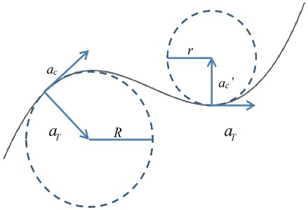

過彎壓車帥又快
不論是自行車或是機車，在高速過彎時常常看到車手會將人與車往同一邊傾斜，然後就快速的過彎。那麼究竟壓車除了帥以外還有什麼優點的？設總重量為 W = mg，輪胎與地面靜摩擦係數為 μ，人與車重心和輪胎接觸點的連線，與鉛直線的夾角為 x，在此稱為傾角。轉彎當下的力圖如圖一，可知水平與鉛直方向合力為零，所以正向力與重力大小相等 mg = N，摩擦力與向心力大小相等 FC = mv 2/ R = fs。

再由合力矩 fs Lcosx = NLsinx 可以得到靜摩擦力等於正向力乘上tanx。所以將上述的關係帶進來可得，傾角只與摩擦係數有關，跟重量那些無關。當傾角越大，所受到的摩擦力也越大。當為最大靜摩擦力時，μmg = mgtanx –> μ = tanx ，那麼再根據向心力可知過彎速度也越快，所以過彎壓車除了帥之外還可以讓你過彎更快，當然還是需要自行注意道路狀況。
mv 2/ R = mgtanx –> v 2 = gR tanx ∝ R tanx
那麼式子中的R代表的是什麼呢？這稱為曲率半徑，也就是過彎的路徑我們可以當作是圓弧的一段，那麼就可以算出該圓的半徑，所以當過彎越接近直線時曲率半徑就會越大。所以會看到不論是機車、汽車或腳踏車，再過一個急彎時多數人會先往反方向，然後在過彎，就是要讓曲率半徑變大，若是摩擦力為定值，則半徑越大能夠過此彎的速度也就越快。 
雖然速度越快但是路徑也越長，那到底時間會不會比較短呢？我們就來看的例子。在右圖中有兩個路線，紅色的曲率半徑比較大且路徑比較長但是比較快，藍色則反之。所以整個過程分三階段，減速、過彎與加速，那麼假設都從同一個速率作減速並且都是等加速度，然後等速率過彎，最後出彎都加速到同一個速率，所以時間就分成三段。

在此所們使用能過該彎道的最高速率做計算，前兩項就是直線加減速的時間，第三項則是過彎所花的時間，所以可知在不同的曲率半徑下，用最高速過同個彎，曲率半徑越大所花的時間越長。但是因為入彎前須要減速，且出彎後須要加速，所以當這兩項也一起考慮進去後，並將與曲率半徑有關的整理成一項如等號右邊，因為該項是負的，所以當該項越大則所花時間就越小。所以最短時間的路徑並非所花時間最少的路徑，而造成此結果的原因是因為需要減速與加速，所以當花越少時間再減速和加速，則時間越短。若有一個彎可以不煞車就過去，那麼不煞車的那條路徑就是最快的路徑。所以在過彎選線原則上就是曲率半徑越大就可以讓你更快速的過彎。

所以我們可以來看看一個計算結果，分別是走最內圈、最外圈與不減速的路徑，可以看到在這種彎道如果不減速，那麼就可以最快通過，再來是走內圈，而外圈的最慢，跟前面的結論相同。所以理論讓任何路段都會存在至少一條最快的路徑，且這條路徑不一定會是最短路徑，但這條路徑一定是很少加減速的路徑，有興趣的可以查一下 The Racing Line 這個關鍵字，就會出現這路徑要怎的得到。所以在平路或是下坡過彎時可以試著壓車過彎，並找出 Racing Line，那可以讓你輕鬆快速地完成該路段。
https://physicsofformula1.wordpress.com/the-racing-line/
若是四周圍都沒有其他人、車、交通號誌與符號時，可以照著以下步驟過彎可以讓你高速過彎
- 煞車至所選路線的最高速率
a. 過彎途中身體與車身往同個方向傾斜至最大傾角
b. 若是已到最大傾角，那麼煞車就有可能導致摔車，但若要煞車則先將車身回正在煞車會比較安全
c. 出彎加速 - 善用路邊凸面鏡看得更遠